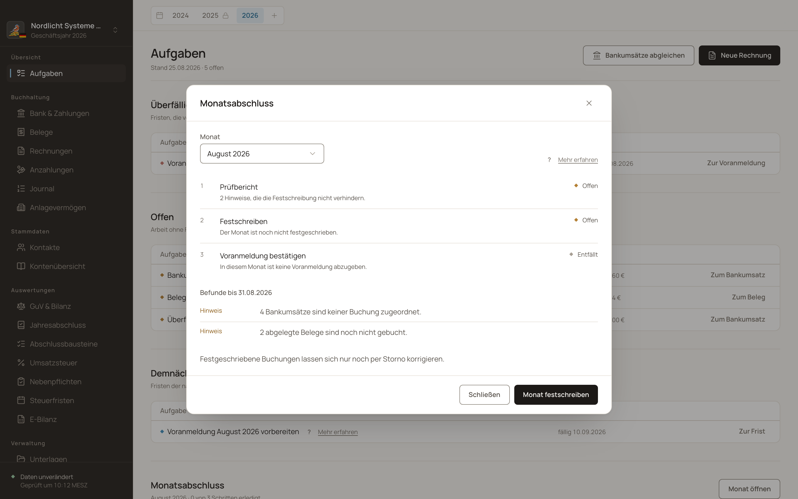
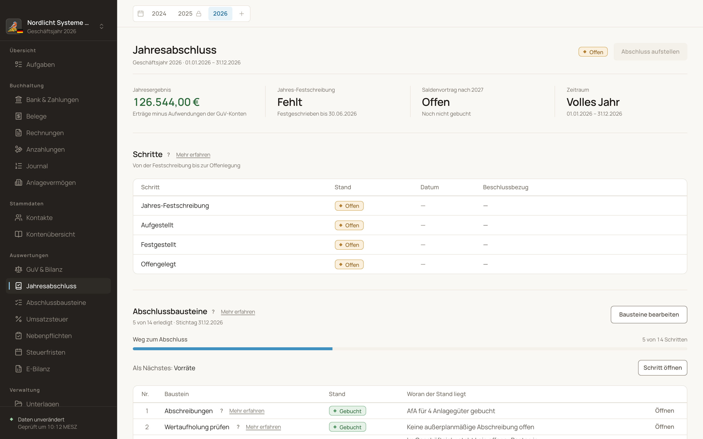

Monatsabschluss
Drei Schritte, in dieser Reihenfolge
Prüfen Sie offene Punkte des Monats und bestätigen Sie den Abschluss. Danach bereitet Buchfink die Beträge für Ihre Umsatzsteuer-Voranmeldung vor, die Sie in Mein ELSTER übertragen.
{kind=link}

Funktionen
Unser Ziel ist, dass Sie auch einen einfachen Jahresabschluss selbst erstellen können. Buchfink führt bereits durch die Vorbereitung. Die vollständige Einreichung und Offenlegung sind noch nicht abgedeckt.
Monatsabschluss
Prüfen Sie offene Punkte des Monats und bestätigen Sie den Abschluss. Danach bereitet Buchfink die Beträge für Ihre Umsatzsteuer-Voranmeldung vor, die Sie in Mein ELSTER übertragen.

Jahresabschluss
Die Aufgabenliste führt Sie durch die Vorbereitung des Jahresabschlusses. Sie öffnen den jeweiligen Schritt direkt und sehen, was noch fehlt. Nicht benötigte Schritte können Sie mit Begründung überspringen.

Bilanz und GuV
Sehen Sie Vermögen, Schulden und Ergebnis Ihres Unternehmens mit den Vergleichswerten des Vorjahres. Zu einem Betrag können Sie die Buchungen und Belege nachschlagen. Bilanz und Gewinn- und Verlustrechnung lassen sich als PDF oder Tabelle ausgeben.

E-Bilanz
Buchfink erzeugt eine vorläufige E-Bilanz-Datei. Ihre Zuordnung zum amtlichen Format ist noch ungeprüft. Der Export ist deshalb noch nicht als einreichungsfertige E-Bilanz zu verstehen.

Die Einreichung ist noch ein offenes Projektziel
Die E-Bilanz-Zuordnung muss geprüft werden. Auch Nachweise zum bestätigten und unterzeichneten Abschluss sowie die Offenlegung sind noch nicht vollständig in den Abschlussablauf eingebunden. Die offenen Aufgaben stehen auf der Roadmap.
Weiter
Der dritte Schritt des Monatsabschlusses wohnt dort.
Festschreibung, Zeitstempel und das Protokoll dahinter.
Was im Modul Jahresabschluss noch offen ist.
{kind=link}